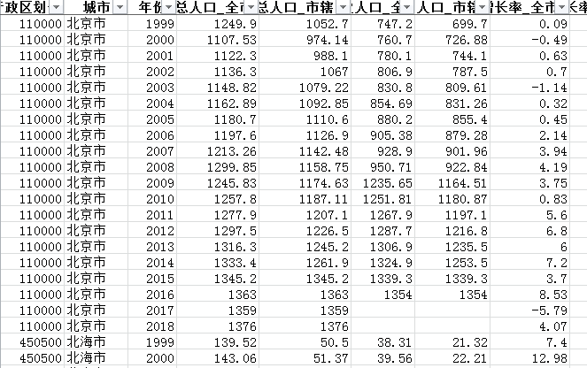
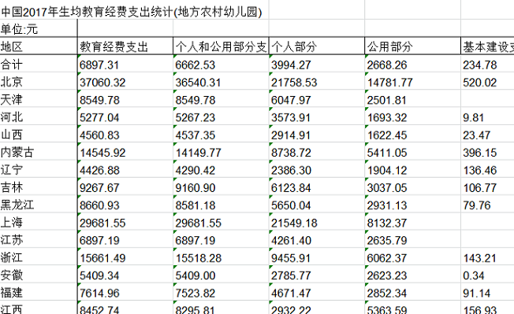
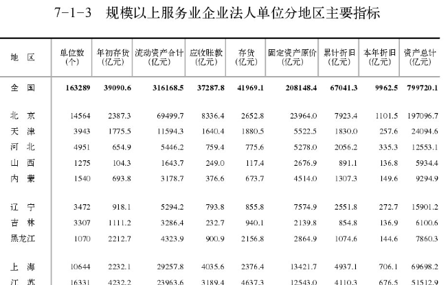
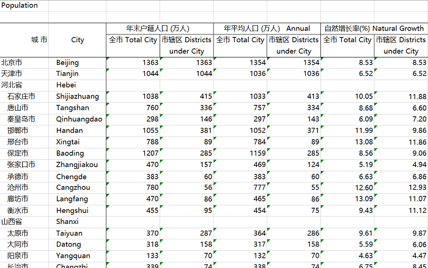

中国各类统计年鉴数据合集（更新至2020年）
Statistical yearbook of China
统计年鉴收录上一年全国和各省、自治区、直辖市每年经济和社会各方面大量的统计数据，以及历史重要年份和近几十年的全国主要统计数据，以统计图表和分析说明为主，通过高度密集的统计数据来全面、系统、连续地记录年度经济、社会等各方面发展情况
数据介绍
本站提供近30年来的中国各类统计年鉴包括中国统计年鉴、中国城市统计年鉴、中国农村统计年鉴、中国能源统计年鉴、中国金融统计年鉴、中国港口年鉴、中国环境统计年鉴、中国区域经济统计年鉴、中国低碳你年鉴、中国劳动统计年鉴、中国教育统计年鉴、中国民政统计年鉴、中国旅游统计年鉴、中国财政统计年鉴、中国工业统计年鉴、中国海洋统计年鉴、中国火炬统计年鉴、中国保险统计年鉴、中国渔业统计年鉴、中国教育经费统计年鉴、中国林业统计年鉴、中国交通年鉴、中国税务稽查年鉴、中国钢铁工业年鉴、中国科技统计年鉴、中国城乡建设统计年鉴、中国文化及相关产业统计年鉴、国际统计年鉴等。
本站提供的数据来源于国家统计局编制的全国各类统计数据。
数据概况
空间范围：全国
时间范围：1978年至2020年
数据类型：面板、文本|EXCEL、PDF等
数据预览
|  |  |  |
| 中国城市统计年鉴2000-2019 EXCEL面板数据 | 2017年中国教育经费统计年鉴 EXCEL | 2017年中国第三产业统计年鉴 |
|  | ||
| 2018年中国农村统计年鉴 EXCEL | 2018年中国科技统计年鉴 EXCEL | 2018年中国工业统计年鉴 EXCEL |
数据下载
该数据为“交换共享”数据，不提供直接数据下载链接，如果有需要可以联系邮箱 gispie@163.com（或新浪微博私信@斩之浪），获取下载口令~
数据获取流程可参考本站数据共享说明
全国各类统计年鉴数据合集
| 编号 | 数据名称 | 数据介绍 | 年份 | 类型 | 共享口令 | 数据下载 |
|---|
建议使用Google浏览器，IE内核浏览器可能不正常显示下载按钮等！
Fighting, GISer!
最新博文